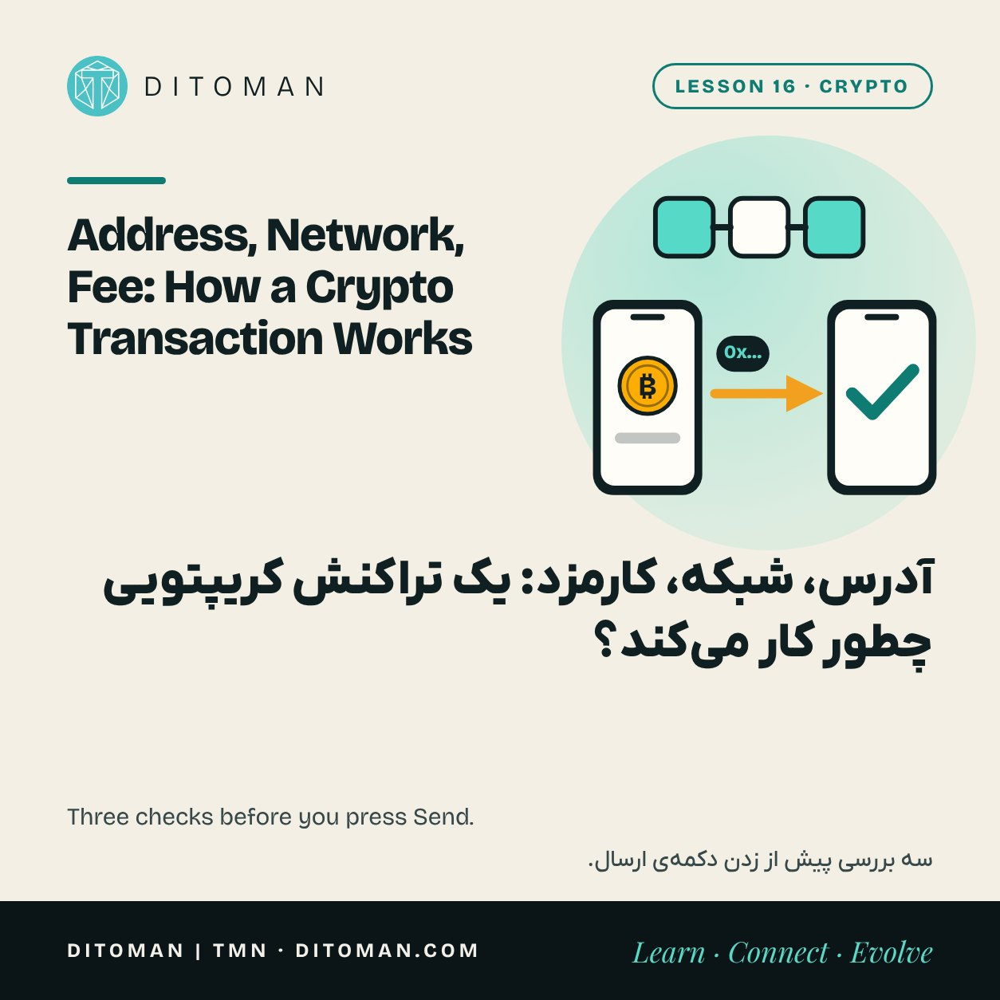

Адрес, сеть, комиссия: как работает криптотранзакция
آدرس، شبکه، کارمزد: یک تراکنش کریپتویی چطور کار میکند؟
Отправка криптовалюты требует трёх решений: какой адрес, какая сеть и какая комиссия. Ошибётесь в одном — и деньги могут пропасть навсегда. Этот урок прослеживает один перевод от кнопки «Отправить» до окончательного подтверждения.
فرستادن کریپتو سه تصمیم دارد: کدام آدرس، کدام شبکه و چقدر کارمزد. اگر یکی اشتباه باشد، پول ممکن است برای همیشه از دست برود. این درس یک انتقال را از دکمهی «ارسال» تا تأیید نهایی دنبال میکند.
Содержание урока
محتوای درس
Читайте урок на английском или персидском.
درس را به فارسی یا انگلیسی بخوانید.
Урок 14 проследил карточный платёж через пять компаний. В криптопереводе их нет. Есть вы, получатель и сеть компьютеров, которую может проверить любой.
Это делает процесс одновременно проще и строже. Посередине никто не замедляет дело, и никто не исправит ошибку. Поэтому стоит один раз медленно пройти его, прежде чем делать это с настоящими деньгами.
01. Адрес: куда идёт перевод
Адрес похож на номер счёта: длинная строка букв и цифр, идентифицирующая кошелёк. В Ethereum и BNB Smart Chain он начинается с 0x и состоит из 42 символов. Адреса Bitcoin и Tron выглядят иначе.
Адрес публичен. Делиться им безопасно, потому что он позволяет другим только отправлять вам. Секретными должны оставаться приватный ключ или seed-фраза из Урока 13.
Никогда не вводите адрес вручную. Скопируйте и вставьте или отсканируйте QR-код, затем сравните первые четыре и последние четыре символа с оригиналом. Один неверный символ — другой кошелёк.
02. Сеть: по какой дороге
Один и тот же токен может существовать в нескольких блокчейнах. USDT, например, выпускается в Ethereum, Tron, BNB Smart Chain и других. Это отдельные дороги, которые сами по себе не соединены.
Правило простое: отправитель и получатель должны использовать одну и ту же сеть. Если кошелёк или биржа получателя ожидает одну сеть, а вы отправляете по другой, монеты могут никогда не появиться, а вернуть их — от трудного до невозможного.
Это самая частая дорогостоящая ошибка новичков. Перед отправкой спросите у получателя две вещи: адрес и сеть.
03. Комиссия: плата за место
Каждая транзакция платит комиссию тем, кто поддерживает сеть. Её часто называют gas. Комиссия оплачивает место в следующем блоке, поэтому она зависит от загруженности сети, а не от суммы. Отправка 10 или 10 000 долларов может стоить одинаково.
Две детали удивляют новичков.
Комиссия платится в собственной монете сети. Чтобы отправить любой токен в BNB Smart Chain, нужно немного BNB. В Ethereum нужен ETH, в Tron — TRX. Кошелёк с токенами, но без монеты сети ничего отправить не может.
Комиссии сильно различаются между сетями и от часа к часу. Ваш кошелёк показывает комиссию до подтверждения. Читайте её.
- 1Спросите у получателя адрес и сеть.
- 2Вставьте адрес и сравните первые четыре и последние четыре символа.
- 3Выберите ту же сеть, которую назвал получатель.
- 4Убедитесь, что у вас есть монета сети для комиссии, и прочитайте комиссию.
- 5Отправьте небольшой тест, дождитесь, пока он придёт, затем отправьте остальное.
- 6Сохраните хэш транзакции и найдите его в блок-эксплорере.
04. Подтверждение: когда всё готово
После нажатия «Отправить» транзакция ждёт включения в блок. После включения у неё одно подтверждение. Каждый следующий блок добавляет ещё одно, и чем больше подтверждений, тем труднее было бы её отменить.
Bitcoin создаёт блок примерно каждые десять минут. Многим новым сетям нужно несколько секунд. Биржи часто ждут нескольких подтверждений, прежде чем зачислить депозит, поэтому перевод может показываться успешным в вашем кошельке и всё ещё быть в ожидании на другой стороне.
05. Проверьте сами
У каждой транзакции есть идентификатор, называемый хэшем. Вставьте его в блок-эксплорер, например BscScan для BNB Smart Chain, и вы увидите отправителя, получателя, сумму, комиссию и статус. Слово какой-либо компании не требуется.
Если получатель говорит, что ничего не пришло, эксплорер решает вопрос. Если он показывает успех на правильный адрес в правильной сети, монеты там.
06. Отмены нет
Подтверждённая транзакция окончательна. Ни банк, ни служба поддержки, ни судебное решение не могут отменить её в блокчейне. Единственный путь назад — получатель сам отправит её обратно.
Поэтому привычки важнее, чем где-либо ещё в финансах.
Сначала отправьте небольшой тест, если адрес новый или сумма большая.
Проверьте адрес и сеть дважды, затем ещё раз сверьте первые и последние символы на экране подтверждения.
Держите немного монеты сети для комиссий.
Сохраните хэш транзакции пока получатель не подтвердит.
Что из этого вынести
Адрес говорит, куда. Сеть говорит, по какой дороге. Оба должны совпадать с данными получателя.
Комиссия платится в собственной монете сети и зависит от трафика, а не от суммы.
Подтверждения делают транзакцию окончательной, а окончательную транзакцию нельзя отменить.
Блок-эксплорер показывает правду о любом переводе.
Небольшой тестовый перевод — самая дешёвая страховка.
درس ۱۴ یک پرداخت کارتی را میان پنج شرکت دنبال کرد. در انتقال کریپتویی هیچکدام از آنها نیستند. فقط ما هستیم، گیرنده و شبکهای از کامپیوترها که هر کسی میتواند آن را ببیند و بررسی کند.
این، کار را هم سادهتر میکند و هم سختگیرانهتر. کسی در میانه نیست که کار را کند کند و کسی هم نیست که اشتباه را درست کند. برای همین میارزد پیش از انجامش با پول واقعی، یک بار آرام از اول تا آخرش را با هم برویم.
۰۱. آدرس: به کجا میرود
آدرس مثل شمارهحساب است: رشتهای بلند از حرف و عدد که یک کیف پول را مشخص میکند. در اتریوم و BNB Smart Chain با 0x شروع میشود و ۴۲ کاراکتر دارد. آدرسهای بیتکوین و ترون شکل دیگری دارند.
آدرس عمومی است. دادنش به دیگران خطری ندارد، چون فقط اجازه میدهد برایتان بفرستند. چیزی که باید پنهان بماند کلید خصوصی یا عبارت بازیابی درس ۱۳ است.
هیچوقت آدرس را با دست تایپ نکنید. کپی و جایگذاری کنید یا کد QR را اسکن کنید و بعد چهار کاراکتر اول و چهار کاراکتر آخر را با آدرس اصلی مقایسه کنید. یک کاراکتر اشتباه یعنی یک کیف پول دیگر.
۰۲. شبکه: از کدام جاده
یک توکن میتواند روی چند بلاکچین وجود داشته باشد. مثلاً USDT روی اتریوم، ترون، BNB Smart Chain و چند شبکهی دیگر منتشر شده است. اینها جادههای جداییاند که خودبهخود به هم وصل نیستند.
قاعده ساده است: فرستنده و گیرنده باید از یک شبکه استفاده کنند. اگر کیف پول یا صرافی گیرنده منتظر یک شبکه باشد و ما روی شبکهی دیگری بفرستیم، کوینها ممکن است هرگز دیده نشوند و برگرداندنشان از سخت تا ناممکن است.
این رایجترین اشتباه پرهزینهی تازهکارهاست. پیش از ارسال، دو چیز را از گیرنده بپرسید: آدرس و شبکه.
۰۳. کارمزد: هزینهی جا
هر تراکنش کارمزدی به کسانی میدهد که شبکه را اداره میکنند. به آن «گس» هم میگویند. این کارمزد بهای جا در بلاک بعدی است، پس به شلوغی شبکه بستگی دارد، نه به مبلغی که میفرستیم. فرستادن ۱۰ دلار یا ۱۰ هزار دلار میتواند یک اندازه هزینه داشته باشد.
دو نکته تازهواردها را غافلگیر میکند.
کارمزد با کوین خودِ شبکه پرداخت میشود. برای فرستادن هر توکنی روی BNB Smart Chain کمی BNB لازم است. روی اتریوم ETH و روی ترون TRX. کیف پولی که توکن دارد ولی کوین شبکه را ندارد، هیچ چیزی نمیتواند بفرستد.
کارمزد شبکهها با هم خیلی فرق دارد و ساعتبهساعت هم عوض میشود. کیف پول پیش از تأیید، کارمزد را نشان میدهد. آن را بخوانید.
- ۱از گیرنده آدرس و شبکه را بپرسید.
- ۲آدرس را جایگذاری کنید و چهار کاراکتر اول و آخر را مقایسه کنید.
- ۳همان شبکهای را انتخاب کنید که گیرنده گفته است.
- ۴کوین شبکه را داشته باشید تا کارمزد پرداخت شود، و مبلغ کارمزد را بخوانید.
- ۵یک مبلغ کوچک آزمایشی بفرستید، صبر کنید برسد و بعد بقیه را بفرستید.
- ۶هش تراکنش را نگه دارید و آن را در مرورگر بلاک ببینید.
۰۴. تأیید: کی تمام میشود
بعد از زدن «ارسال»، تراکنش منتظر میماند تا در یک بلاک قرار بگیرد. وقتی قرار گرفت، یک تأیید دارد. هر بلاک بعدی یک تأیید دیگر اضافه میکند و هرچه تأییدها بیشتر شود، برگرداندنش سختتر میشود.
بیتکوین تقریباً هر ده دقیقه یک بلاک میسازد. بسیاری از شبکههای جدیدتر چند ثانیه وقت میبرند. صرافیها اغلب پیش از نشاندن واریز منتظر چند تأیید میمانند؛ برای همین انتقال میتواند در کیف پول ما موفق باشد و آن طرف هنوز «در انتظار».
۰۵. خودتان بررسی کنید
هر تراکنش یک شناسه دارد که به آن «هش» میگویند. آن را در یک مرورگر بلاک، مثل BscScan برای BNB Smart Chain، جایگذاری کنید تا فرستنده، گیرنده، مبلغ، کارمزد و وضعیت را ببینید. به حرف هیچ شرکتی نیاز نیست.
اگر گیرنده بگوید چیزی نرسیده، مرورگر بلاک تکلیف را روشن میکند. اگر نشان بدهد تراکنش به آدرس درست و روی شبکهی درست موفق بوده، کوینها همانجا هستند.
۰۶. دکمهی برگشت وجود ندارد
تراکنش تأییدشده قطعی است. هیچ بانک، پشتیبانی یا حکم دادگاهی نمیتواند آن را روی بلاکچین برگرداند. تنها راه برگشت این است که گیرنده خودش پس بفرستد.
برای همین عادتها اینجا از هر جای دیگر در امور مالی مهمترند.
اول یک مبلغ کوچک آزمایشی بفرستید، وقتی آدرس تازه است یا مبلغ بزرگ.
آدرس و شبکه را دو بار بررسی کنید و در صفحهی تأیید، یک بار دیگر کاراکترهای اول و آخر را ببینید.
کمی از کوین شبکه برای کارمزد نگه دارید.
هش تراکنش را نگه دارید تا گیرنده رسیدنش را تأیید کند.
چه برداشتی کنیم
آدرس میگوید کجا. شبکه میگوید از کدام جاده. هر دو باید با گیرنده یکی باشد.
کارمزد با کوین خودِ شبکه پرداخت میشود و به شلوغی بستگی دارد، نه به مبلغ.
تأییدها تراکنش را قطعی میکنند و تراکنش قطعی برگشت ندارد.
مرورگر بلاک حقیقتِ هر انتقال را نشان میدهد.
یک انتقال آزمایشی کوچک ارزانترین بیمهی ممکن است.
Попробуйте с TMN
با TMN تمرین کنید
TMN находится в BNB Smart Chain, поэтому для его получения нужен адрес BNB Smart Chain в личном кошельке, а для отправки — немного BNB на комиссию. Руководство по TMN проводит через это с картинками.
TMN روی شبکهی BNB Smart Chain است؛ پس برای دریافتش آدرس BNB Smart Chain در یک کیف پول شخصی لازم است و برای فرستادنش کمی BNB برای کارمزد. راهنمای TMN این کار را با تصویر نشان میدهد.
Ключевые понятия
مفاهیم کلیدی
- Адрес кошелька
- Сеть (блокчейн)
- Сетевая комиссия (gas)
- Монета сети
- Блок и подтверждение
- Хэш транзакции
- Блок-эксплорер
- Окончательность
- Тестовый перевод
- آدرس کیف پول
- شبکه (بلاکچین)
- کارمزد شبکه (گس)
- کوین شبکه
- بلاک و تأیید
- هش تراکنش
- مرورگر بلاک
- قطعی بودن
- انتقال آزمایشی
Цели обучения
اهداف یادگیری
- Объясните, что такое адрес и почему делиться им безопасно.
- Скажите, почему отправитель и получатель должны использовать одну сеть.
- Объясните, за что платит сетевая комиссия и в какой монете.
- Опишите, что такое подтверждение.
- Найдите транзакцию в блок-эксплорере.
- Перечислите проверки перед отправкой.
- توضیح دهید آدرس چیست و چرا دادنش به دیگران خطری ندارد.
- بگویید چرا فرستنده و گیرنده باید از یک شبکه استفاده کنند.
- توضیح دهید کارمزد شبکه بهای چیست و با کدام کوین پرداخت میشود.
- بگویید تأیید تراکنش یعنی چه.
- یک تراکنش را در مرورگر بلاک پیدا کنید.
- بررسیهای پیش از ارسال را بشمارید.
Тест
آزمونک
Проверьте, что у вас осталось в памяти. Ответ — под каждым вопросом.
ببین چه چیزی در ذهنت مانده. پاسخ زیر هر پرسش آمده است.
Вопрос 1
پرسش ۱
Безопасно ли делиться адресом своего кошелька?
دادن آدرس کیف پول به دیگران خطری دارد؟
A. Нет, это позволяет другим забрать ваши монеты
الف. بله، دیگران میتوانند کوینها را بردارند
B. Да, это позволяет другим только отправлять вам
ب. نه، فقط اجازه میدهد برایتان بفرستند
C. Только если поделиться один раз
ج. فقط اگر یک بار بدهید خطری ندارد
Правильный ответ: B
پاسخ درست: ب
Вопрос 2
پرسش ۲
У вас есть USDT в BNB Smart Chain, но нет BNB. Что произойдёт при попытке отправить?
روی BNB Smart Chain تتر دارید ولی BNB ندارید. وقتی بخواهید بفرستید چه میشود؟
A. Комиссия будет взята из USDT
الف. کارمزد از خود تتر کم میشود
B. Отправить нельзя; для комиссии нужен BNB
ب. ارسال نمیشود؛ کارمزد BNB میخواهد
C. Комиссию заплатит получатель
ج. گیرنده کارمزد را میدهد
Правильный ответ: B
پاسخ درست: ب
Вопрос 3
پرسش ۳
От чего в основном зависит сетевая комиссия?
کارمزد شبکه بیشتر به چه چیزی بستگی دارد؟
A. От загруженности сети
الف. شلوغی شبکه
B. От суммы, которую вы отправляете
ب. مبلغی که میفرستید
C. От страны получателя
ج. کشور گیرنده
Правильный ответ: A
پاسخ درست: الف
Вопрос 4
پرسش ۴
Вы отправили по другой сети, не по той, которую ожидал получатель. Каков вероятный результат?
روی شبکهای غیر از شبکهی مورد انتظار گیرنده فرستادهاید. نتیجهی محتمل چیست؟
A. Сети конвертируют это автоматически
الف. شبکهها خودکار تبدیلش میکنند
B. Вернётся к вам через день
ب. بعد از یک روز به شما برمیگردد
C. Монеты могут не появиться и могут быть потеряны
ج. کوینها ممکن است دیده نشوند و از دست بروند
Правильный ответ: C
پاسخ درست: ج
Вопрос 5
پرسش ۵
Как доказать, что перевод дошёл?
چطور میشود ثابت کرد یک انتقال رسیده است؟
A. Скриншотом вашего кошелька
الف. عکس از صفحهی کیف پول
B. Хэшем транзакции в блок-эксплорере
ب. هش تراکنش در مرورگر بلاک
C. Сообщением от поддержки
ج. پیامی از پشتیبانی
Правильный ответ: B
پاسخ درست: ب
Источники
منابع
- ethereum.org: газ и комиссии
- Руководство разработчика Bitcoin: транзакции
- Документация BNB Chain: обзор BNB Smart Chain
- BscScan: блок-эксплорер BNB Smart Chain
Время блоков и комиссии меняются при обновлении сетей. Всегда читайте комиссию и сеть, показанные в вашем кошельке, прежде чем подтверждать.
زمان بلاک و کارمزد با بهروزرسانی شبکهها تغییر میکند. پیش از تأیید، همیشه کارمزد و شبکهای را که کیف پول خودتان نشان میدهد بخوانید.
با هم دنبال میکنیمСледите за новостями
Новые уроки сначала объявляются в каналах Ditoman.
درسهای تازه اول در کانالهای دیتومان معرفی میشوند.